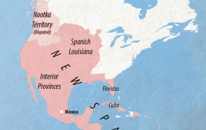

Welcome to your guide to Spain's History

Spain is very influential country in terms of its historical/social/artistic impact on the world. Spanish history is filled with different owners taking and shaping the country from the Visigoths, Christians, Muslims, The English, and the French.
Spain has had its fair share of rulers.
Notable historical events of Spain
- It is estimated about 1.2 million years ago the first settlers in Spain arrived in the Iberian Peninsula
- The Romans arrived in Spain in 200BC and occupied it for over 600 years but took them at least 200 years to defeat the toughest tribes.
- The Romans are to be accredited with most of the preserved architecture that remains here today. From the road system, aqueducts, theatres and even the basis of our common knowledge is all thanks to the Romans!
- The Romans rule faded, and the Germanic tribes started to take foot in the country. By 410AD they had established a majority control.
- In 711AD the Moors invaded the country through north Africa. And exercised their influence by renaming the region Al-Andalus
- In the year 1492, An Italian explorer “Christopher Columbus” discovered a new route to the New World. Funded by Queen Isabella the first.
- This discovery kickstarted European interest into the new world. The Spanish empire is considered one of the greatest in this era solely due to the vast influence they brought. They conquered:
- They conquered:
- Vast Majority of South America
- The Caribbean
- Mexico
- Large Majority of the United States

- This is why there are so many Spanish speakers globally! The vast influence of Spain still remains today
- 1936-1939 Is when the Spanish civil war took place. Fascist General Franco would defeat the republicans.
- 1936-1975 Francos death allows Spain to convert to a monarchy from its bloody fascist rule
- 1979 - With the monarchy a path to democracy is paved and established